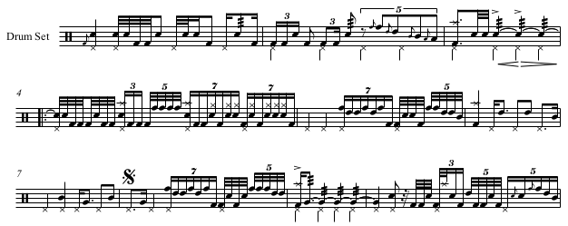

The Black Page (in Perl)
I have a library of drummer tools, and Frank Zappa wrote The Black Page drum solo. So...
I determined that I would code the transcription (PDF) by Phillip Albright, as played by Terry Bozzio. This was a week ago, but I finally finished!

This piece is not easy to play. Fortunately the transcription is about perfect.
For the coding, a MIDI::Drummer::Tiny object is created with a couple handfuls of custom musical durations via Music::Duration. These are added to the MIDI-Perl known lengths list, and used to add notes and rests to the score.
Also, I did not do any of the transcribed repeats. So the whole piece is just 26 bars long.
Ok! The black-page program begins thusly:
#!/usr/bin/env perl
use strict;
use warnings;
Which is the traditional Perl preamble.
Next, we import the libraries and their functionality, that we will use:
use MIDI::Drummer::Tiny ();
use Music::Duration ();
use MIDI::Util qw(dura_size);
For a flam(), define a volume accent value to use for the grace-note:
use constant ACCENT => 70;
Alrighty then. Time to instantiate a drummer object:
my $d = MIDI::Drummer::Tiny->new(
file => "$0.mid",
bpm => 60,
bars => 26,
reverb => 15,
);
Now that we have that, we can create the custom note durations that Frank imagined:
Music::Duration::tuplet($d->half, 'A', 5);
Music::Duration::tuplet($d->eighth, 'B', 5);
Music::Duration::tuplet($d->quarter, 'C', 7);
Music::Duration::tuplet($d->quarter, 'D', 5);
Music::Duration::tuplet($d->quarter, 'E', 11);
Music::Duration::tuplet($d->quarter, 'F', 12);
my $ten = dura_size($d->triplet_eighth);
Music::Duration::add_duration(Gten => $ten * 2);
Next, synchronize the patterns that add notes and rests to the score, so that they are played simultaneously:
$d->sync(
\&pulse,
\&beat,
);
The pulse() is the steady, quarter-note pedal high-hat. The beat() is everything else.
Finally, write the MIDI out to a file called "black-page.mid":
$d->write;
Here is the pulse() subroutine:
sub pulse {
for my $i (1 .. $d->beats * $d->bars) {
if ($i == 1) {
$d->flam($d->quarter, 'r', $d->pedal_hh);
}
else {
$d->note($d->quarter, $d->pedal_hh);
}
}
}
This (and beat() below) uses $d as a global variable. If this is too ugly for you, the drummer object can be passed into the subroutines, for the same effect, but with cleaner code. For proper variable passing, please see this simple example.
Anyway, here is the beginning of the beat() subroutine:
sub beat {
# 1st measure:
$d->flam($d->quarter, $d->kick, $d->snare, ACCENT);
$d->note($d->thirtysecond, $d->snare);
$d->note($d->thirtysecond, $d->snare);
$d->note($d->thirtysecond, $d->kick);
$d->note($d->thirtysecond, $d->kick);
$d->note($d->eighth, $d->snare);
...
This just adds notes, clusters of notes, and rests to the score.
To actually hear it, you have to use timidity on the command-line or VLC. Either of these programs can render to MP3 too. Here's the timidity output with exciting General MIDI patches:
The floor-tom rolls leave much to be desired...